Case study 1AI Design and Automation
Turning raw, unedited phone photos into an editorial, high‑fashion brand
Palak Designers is a wholesale kurti and ethnic wear label. I redesigned its social media with AI-generated editorial imagery and short-form video, designed a minimalist website, and automated how new posts are produced.
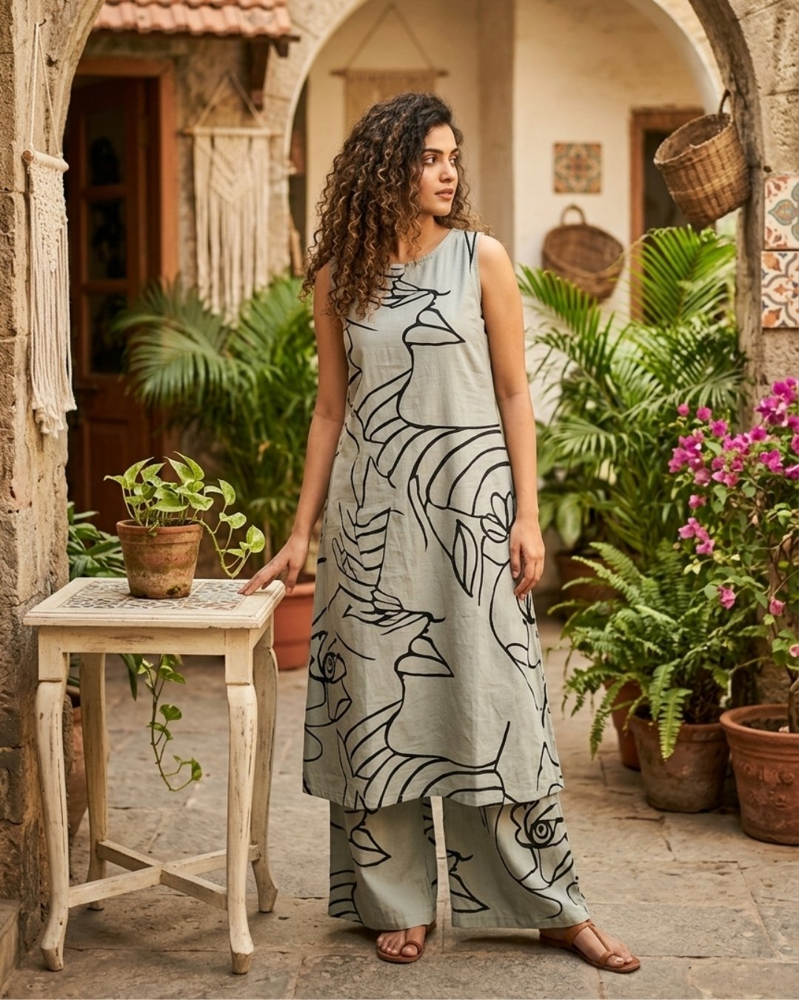
The website
A minimalist site for the brand. The homepage opens on a festive banner, then leads into everyday and designer collections, exclusive boutique pieces and matching mother-and-daughter sets, with a clear way to ask for a quote at every step.
Scroll inside the frame to see the whole homepage.
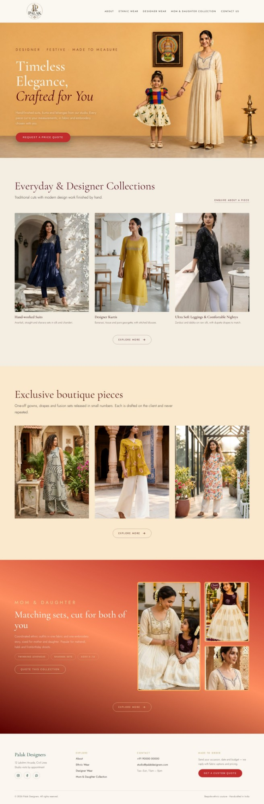
Social posts
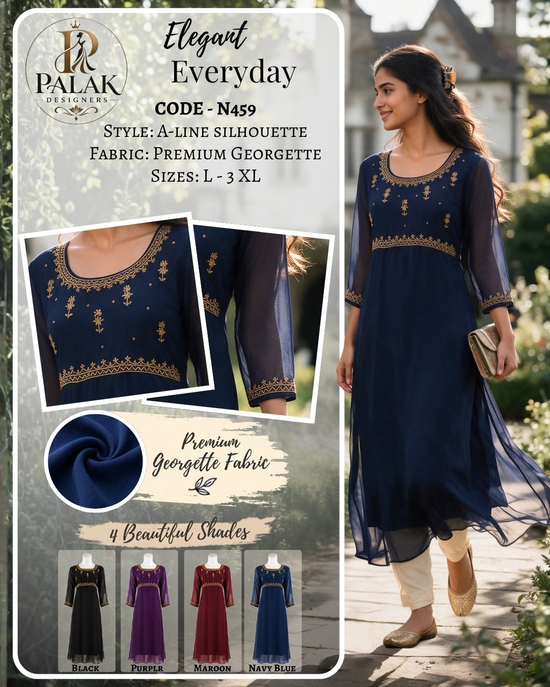
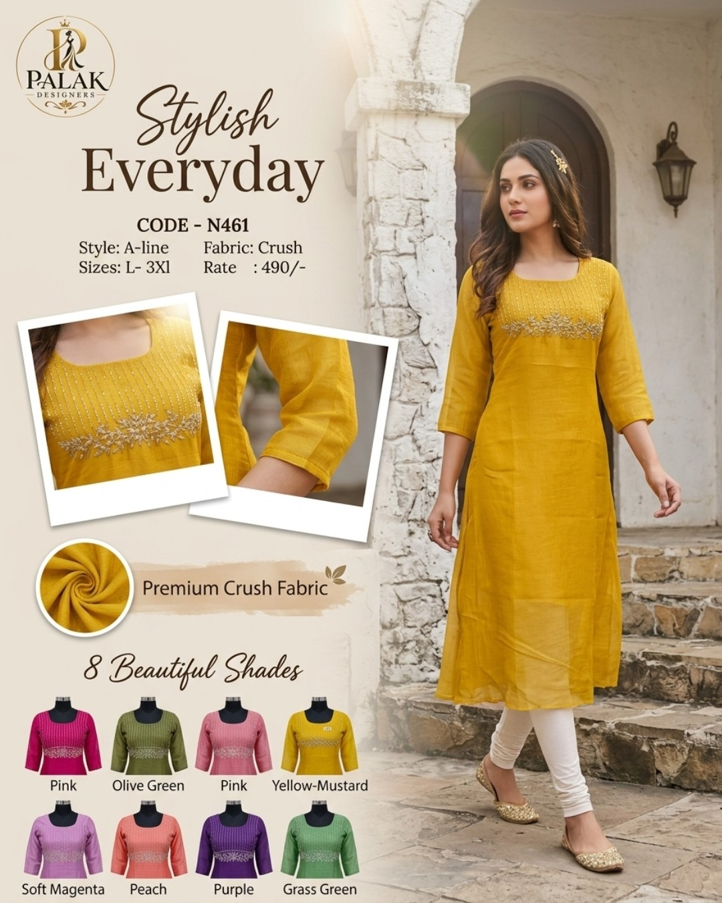
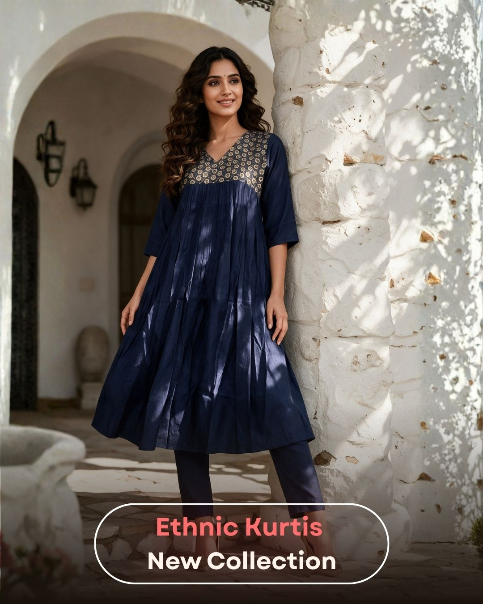
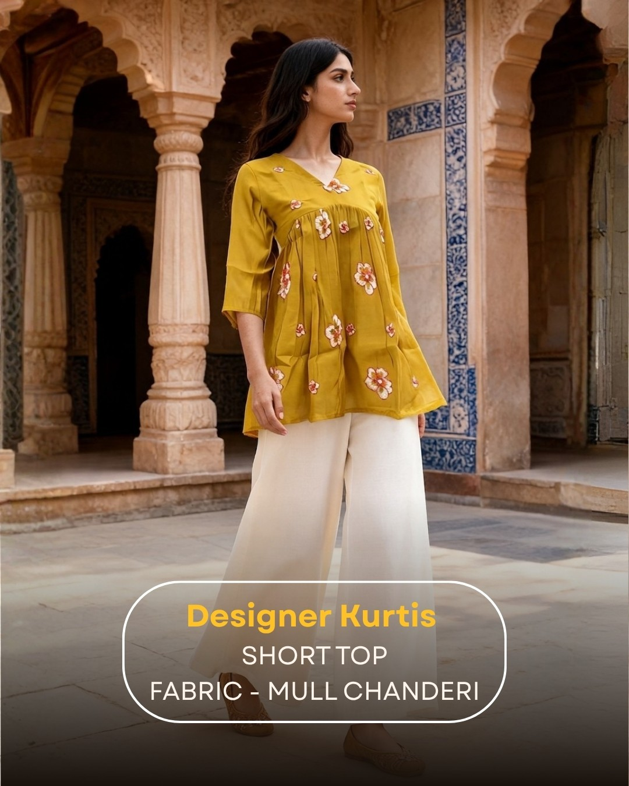
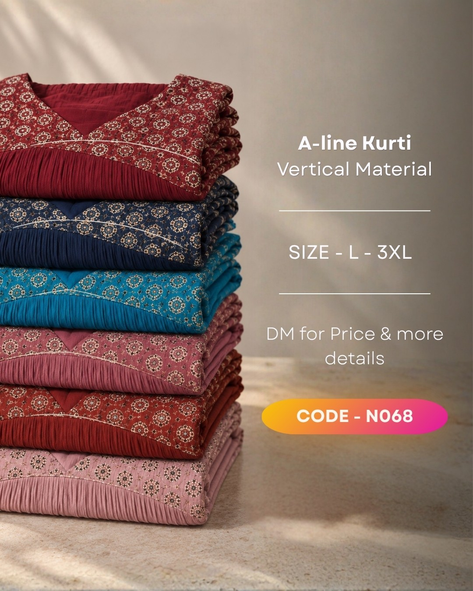
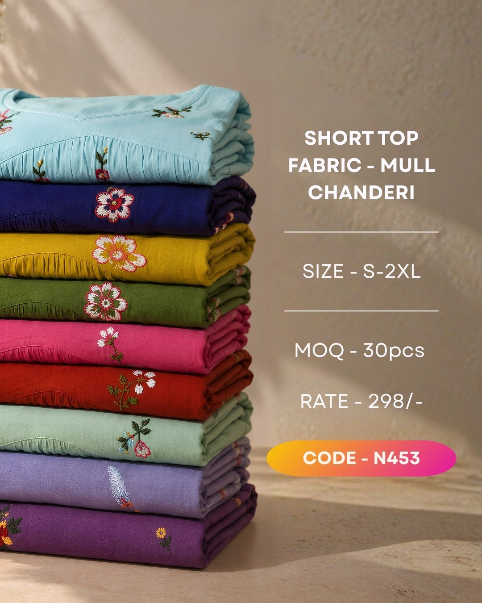
-
The brief
The brand's social feed relied on unedited product photos, and it had no website. Palak Designers wanted a modern, consistent look on Instagram and a simple site to show its collections.
-
What I did
- Editorial imagery. Turned raw photos from the store and warehouse into hyper-realistic AI model shoots, with every garment kept exactly as it is.
- Social posts. Redesigned the post layouts so each product's details and colour options read clearly and consistently.
- Video. Generated AI video clips and edited them into Instagram-ready reels.
- Website. Designed a minimalist website for the brand's collections.
- Automation. Automated post generation, so each new product drops into the fixed layout without being designed by hand.
-
Challenges
- Keeping the garment untouched. The source photos were shot on a phone, in poor light and at low quality. Each prompt had to lift the image to editorial quality without changing the kurti's cut, colour, print or embroidery.
- Video without hallucinations. Instead of one long generation, I produced several 5-second clips. Shorter clips used fewer tokens and gave the AI less room for mistakes, and I stitched them into one seamless reel.
From raw photo to post and reel
Every product went through the same three steps: raw phone photos from the store, an AI editorial image for the post, then an AI reel built from 5-second clips.
Navy embroidered kurti
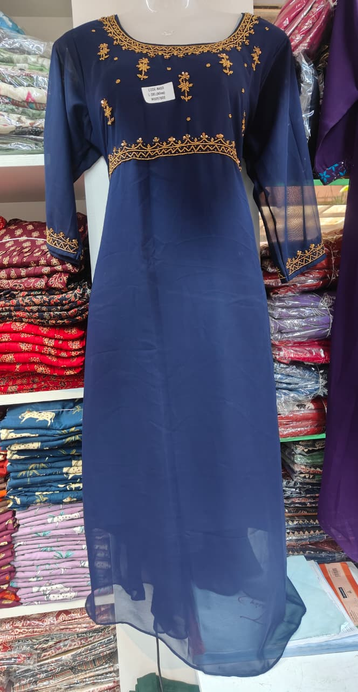
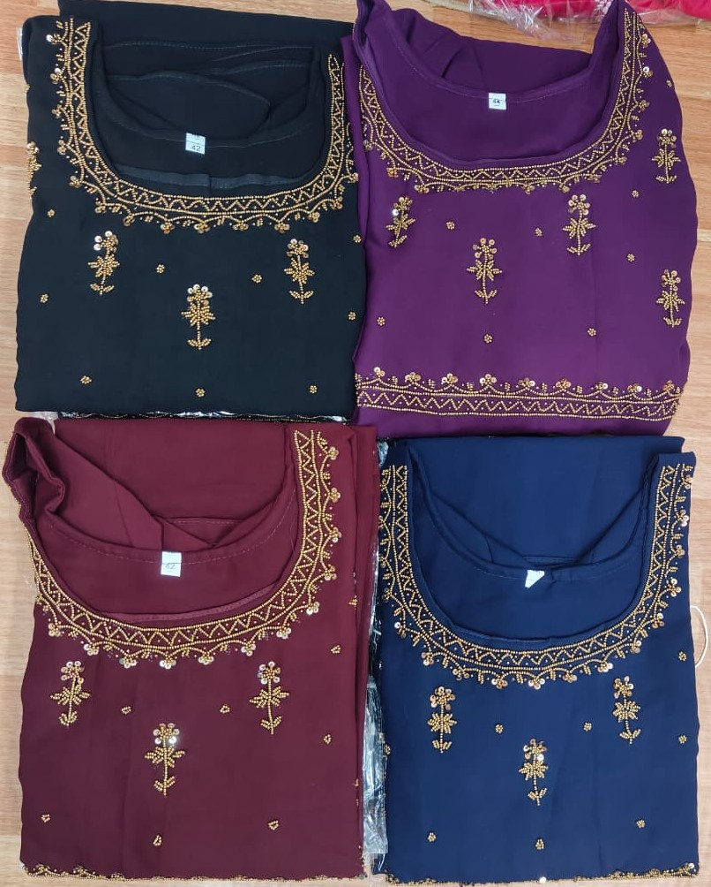
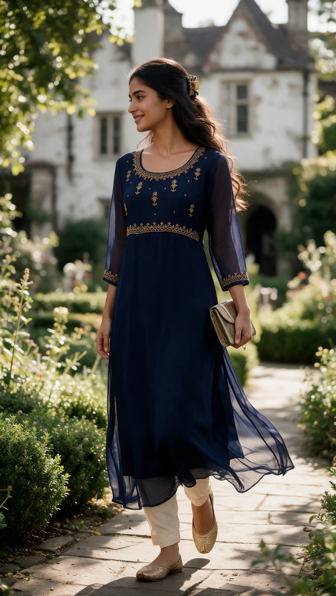
Embroidered short top
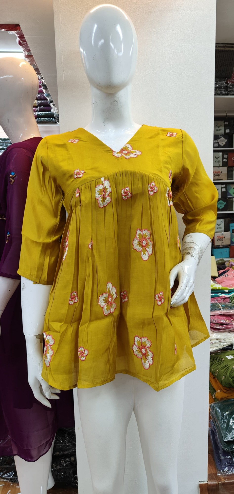
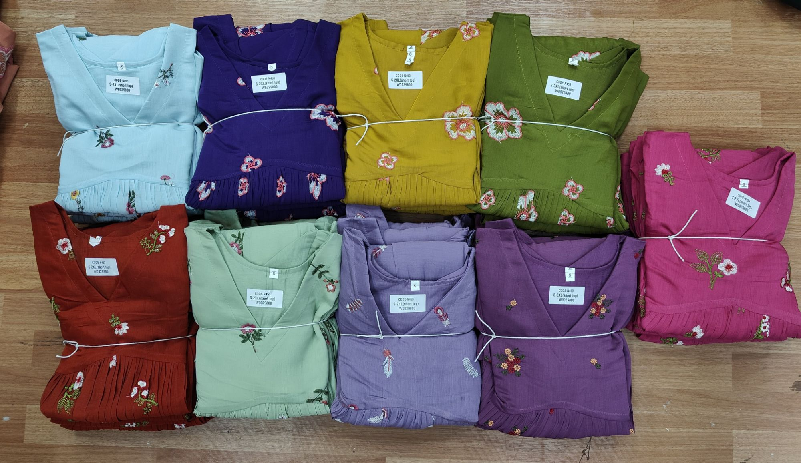
Printed kurti
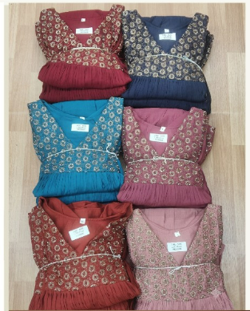
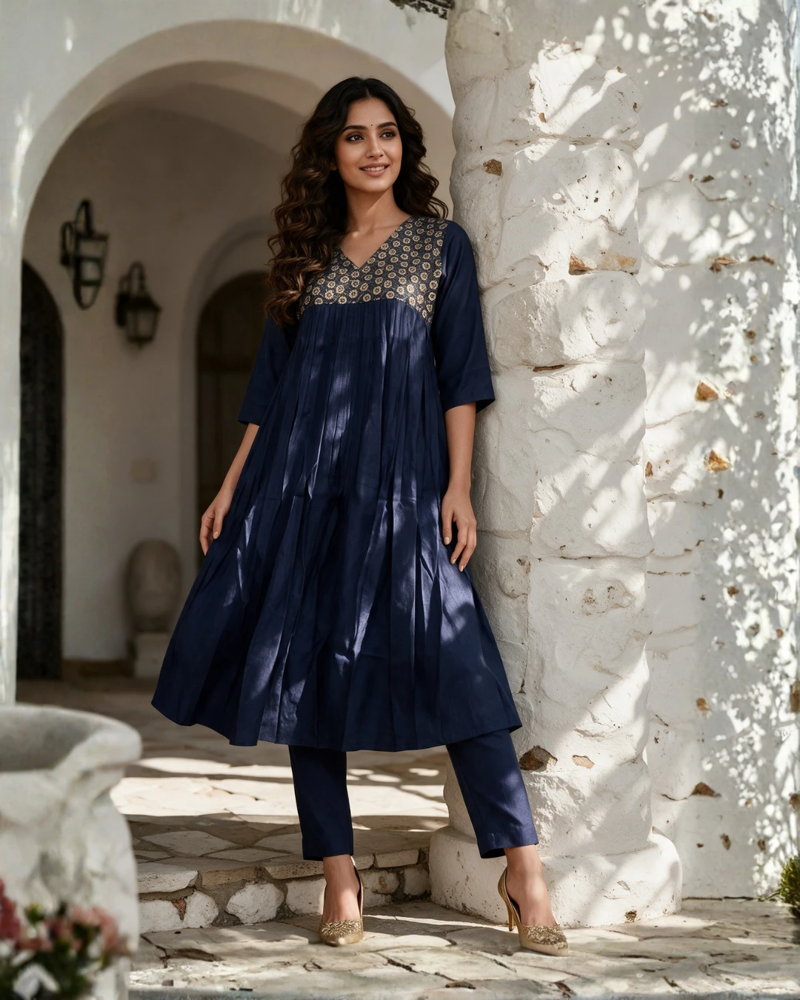